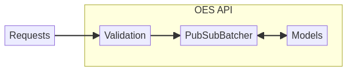
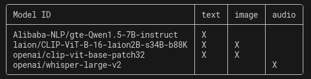
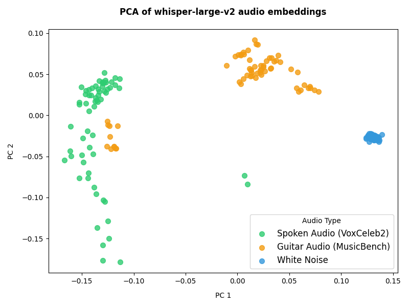

An OpenAI API compatible embedding service for text, images, and audio (written in Rust).
| Name | Embedding Features |
|---|---|
| vllm-project/vllm | only one embedding model (v0.5.4) |
| Gage-Technologies/embedding-server | only sentence transformer embeddings |
| jina-ai/clip-as-service | only clip embeddings |
from openai import OpenAI
client = OpenAI()
response = client.embeddings.create(
input="Your text string goes here",
model="text-embedding-3-small"
)
print(response.data[0].embedding)
A URL scheme to embed files inline in documents.
data:[<mediatype>][;base64],<data>
example:
data:text/plain;base64,SGVsbG8sIFdvcmxkIQ==
import openai
oes_client = OpenAI(base_url="http://localhost:8080/oai/")
def wav_file_to_dataurl(file_path: str) -> str:
...
response = oes_client.embeddings.create(
input=wav_file_to_dataurl("myfile.wav"),
model="openai/whisper-large-v2/audio"
)
print(response.data[0].embedding)
import openai
oes_client = OpenAI(base_url="http://localhost:8080/oai/")
text_embed = oes_client.embeddings.create(
input="A real human person.",
model="openai/clip-vit-base-patch32/text"
)
img_embed = oes_client.embeddings.create(
input="https://thispersondoesnotexist.com/",
model="openai/clip-vit-base-patch32/image"
)
GET: /modelsPOST: /embeddingshuggingface/candle for serving models.


🙠Github: @cmrfrd
🦠Twitter: @thecmrfrd
📬 Email: alex@taoa.io
📑 Blog: taoa.io
taoa.io/static/slides/oes